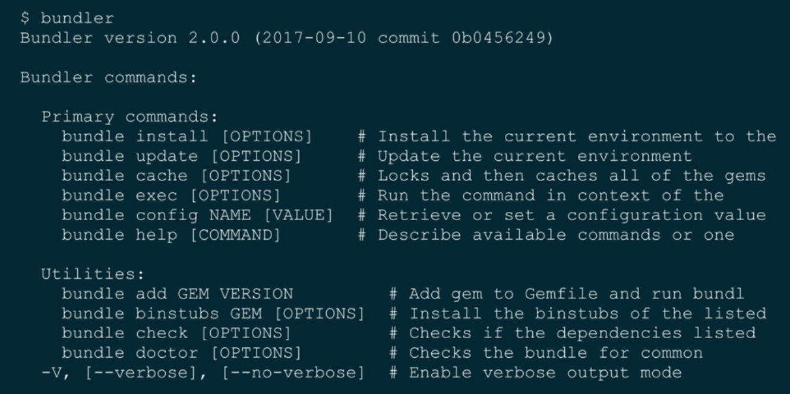

この1年で入ったやつの紹介
- bundle doctor
- bundle add
- bundle plugin
bundle add
$ bundle add rspec
# Gemfile
# Added at 2017-10-04 00:17:42 +0900 by vividmuimui:
gem "rspec", "~> 3.6"
以下のようにオプションも指定できる
$ bundle add rails --version "~> 5.0.0" --source "https://gems.example.com" --group "development"
botとかなら使いみちあるかも？
bundler plugins
module MyBundlerPlugin
class Plugin < Bundler::Plugin::API
command "new-command"
def exec(command, args)
puts "Hello World"
end
end
end
$ bundle new-command
Hello World!
という感じで、新しいコマンドを用意できる
ほかにも、以下のようにも出来たりするみたい
Bundler::Plugin::API.hook "before-install-all" do |deps|
puts "Installing #{deps.map(&:name).join(', ')} 👍!"
end
$ bundle install
Installing rack 👍!
Using bundler 1.15.4
...
...
bundler plugins
作成したpluginのinstallは以下の感じ
$ bundle plugin install my-bundler-plugin
# Gemfile
plugin 'my-bundler-plugin'
まだまだ、pluginsに関してはまだまだ機能もdocumentもbugfixも足りてないらしい
Removing
- Ruby2.3未満のサポート
- Gemfile Source Shortcuts
bundle showbundle vizbundle console- persistent command arguments
--with --without --path --systembundle package
いくつかかいつまんで紹介
Gemfile Source Shortcuts
gem "rack", github: "user/repo"
gem "rack", bitbuket: "user/repo"
といったshortcutがなくなり、以下の書き方をするようになる
gem "gem1", source: "https://mygemserver.private"
gem "gem2", git: "https://github.com/user/repo.git"
gem "gem3", path: "path/to/gem"
ただ、今まで書いていたようにgit_sourceを書いておけばgithub: "user/repo"も書ける
git_source(:github) do |repo_name|
repo_name = "#{repo_name}/#{repo_name}" unless repo_name.include?("/")
"https://github.com/#{repo_name}.git"
end
gem "rack", github: "user/repo"
bundle show
現状のbundle showは機能がたくさんあり複雑
の2つのコマンドに分割
bundle viz
pluginとして切り出される
$ bunldle plugin install bundle-viz
persistent command arguments
オプション引数を自動で記録する処理がなくなる
たとえば、今は以下のコマンドを実行すると、今は自動でconfigファイルにpath=fooを記録されるが、されなくなる
$ bundle install --path foo
毎回常にoptionを指定するか、以下のようにconfigを明示的に設定する必要がある
$ bundle config path foo
–with –without –path –system
bundle installでの上記optionを削除
代わりにbundle configを使う
bundle package
bundle packageからbundle cacheに変更
Adding
Removingに比べて少ない
- Global gem & extension cache
- Specific platforms
Global gem & extension cache
複数アプリケーションで同じgemを使っていたり、
複数rubyバージョンで同じgemを使っているときにinstallが高速化される
Specific platforms
難しくてよくわかんなかった＞＜
Changing
- bundle
- bundle update
- bundle1との互換性
- gems.rb
bundle
今はbundle installが実行されるが、usageが表示されるようになる

bundle update
今は、
$ bundle update
で全gemのupdateが走るが、明示的に指定する必要がある
$ bundle update <gem-name>
$ bundle update --all
のどちらかになる
bundle1との互換性
下位互換はないので注意する必要がある
bundler2でbundle installしたらbundler1では動かない
なので、チームメンバーの足並み合わせて、せーのであげる必要がある
(複数プロジェクトを担当していて、同じrubyバージョンを使っている場合は、プロジェクトをまたいでも足並み揃える必要があるかも？)
gems.rb
-
bundler2でbundle initした時に生成されるファイルはgems.rbになる
-
今までの
Gemfile, Gemfile.lockは普通に使える
-
gems.rbとGemfileが両方存在していたときは、gems.rbが優先される
Ruby2.5にdefault gemとしてbundlerが入る
どのbundlerのバージョンが入るかはhsbtさんと相談と言っていたように聞こえた
でも、2系になりそうな雰囲気だった(曖昧)
毎年メジャーリリースをする
rubyのリリースのように毎年年末あたりにメジャーリリースが行うようになる
rubyのサポートのバージョンを変えたり、古い機能を削除したりなど
おまけ
rfc#6
見てて気になったやつ
-
bundle installした時のデフォルトのインストール先が./.bundle以下になる